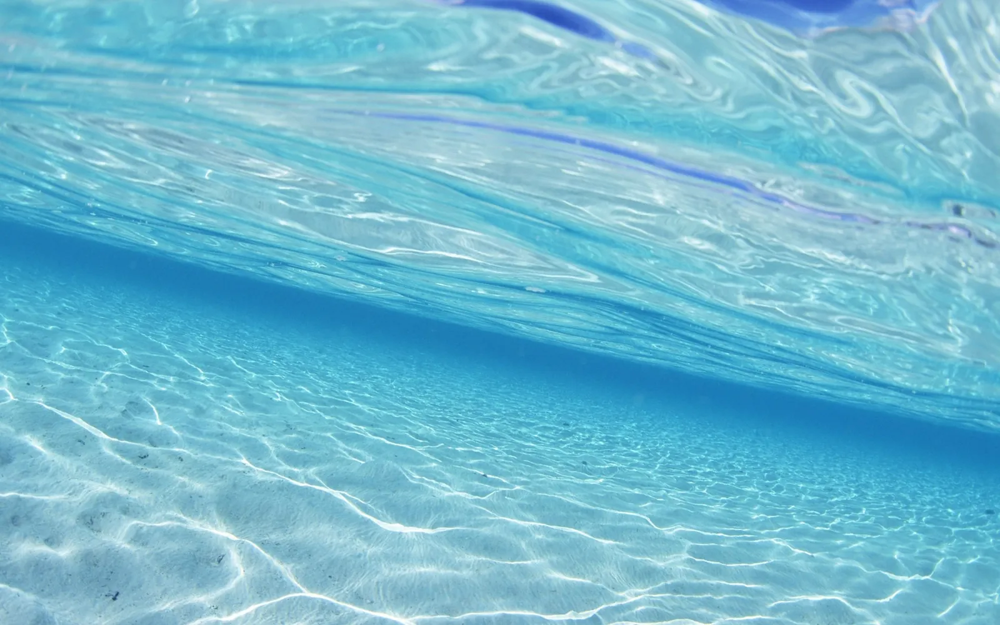

Самая прозрачная вода озера Байкал

Озеро Байкал это территория тектонического происхождения в котором разлита чистая и прозрачная вода. Расположено озеро на южной части Восточной Сибири и считается самым глубоким озером планеты Земля, а так же наибольшим резервуаром чистой пресной воды. Озеро Байкал, внесено в список Всемирного наследия организации ЮНЕСКО. Флора и фауна этой местности более не повторима на Земле.
Прозрачная вода Байкала является одной из чистейших в мире

Кроме того что озера Байкал считается самым глубоким на Земле, оно так же является и самым широким на Земле. Площадь поверхности воды озера Байкал составляет более 31722 кв. км и это без учета островов. Эти данные обозначают что площадь Байкала, равна примерно площади страны Белигии, Дании или Нидерландов. Прозрачная вода по береговой линии равна 2100 км.
Чарующая местность озера окружена скалистыми горами и выступами, на которых раскинулись большие территории нетронутых растений.
Самая прозрачная вода в мире имеет такие минеральные и физические свойства
Кроме своих заслуг из масштабности объема и глубины, неоспоримым преимуществом озера являются его плюсы по сравнению с другими озерами: по составу, это практически идеальная вода. В ней нет загромождения минералами, а так же практически нет органических примесей, но в достатке кислорода. Именно эти свойства, делают лед озера крепким и кристально прозрачным!
Как и все водные ресурсы чистой пресной воды, озеро Байкал сможет напоить множество людей и животных, но именно его запасы считаются колоссальными - 23615,39 куб. км, это почти 19% запаса пресной воды в мире. По своим масштабам чистой и прозначной воды Байкал уступает лишь Каспийскому морю.
Фантастические изображения видны чрез этот прозрачный лед. Порой, можно рассмотреть объекты и камни находящиеся на глубине до 40 метров.
В летние же периоды прозрачная вода, позволяет рассмотреть все не настолько глубоко. Это обусловлено растительностью и живностью, тем не менее на расстояние 10 метров, вода все еще остается прозрачной.
